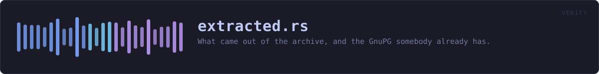

crates/veilvoice-verify/src/extracted.rs
veilvoice-verify · 312 lines · read the source here · or on GitHub
What came out of the archive, and the GnuPG somebody already has.
Marker 91. Two halves of the same request: check the extracted copy as well as the archive, and offer the check through GnuPG for anybody who would rather trust their own tools than this binary.
This used to be the honest limit, and it is not the limit any more
Worth reading before the code, because the module changed shape around it.
A release signs SHA256SUMS, and SHA256SUMS covers the archives. So verifying veilvoice-0.1.14-linux-x86_64.zip proved that archive was the one that was signed, and proved nothing at all about the folder sitting beside it. The folder may predate the download, may have come out of a different copy, may have been edited since. Nothing on disk records which archive a directory was extracted from.
That was written here as a limit that could not be lifted, and it could not be lifted from this side. It was lifted from the other one. A release now also publishes CONTENTS.sha256, listing every file inside every archive with its SHA-256, staged before SHA256SUMS is computed so that the signature covers it too. veilvoice_check::contents reads it and main.rs checks the extracted folder against it, file by file, and reports anything in that folder the release never published.
The lesson is worth keeping beside the code: "no signed list covers loose files" was a true statement about the release format, and it was being treated as a fact about the world. Publishing one more file changed it.
What is left here is the part no hash can answer. A file can be byte for byte correct and still not start, because the tool that unpacked it dropped the execute bit, and somebody in that position has a folder that looks perfect and does nothing. That is what look_in and Program::runnable are for, and they are still asked after every hash has matched.
Releases published before v0.1.15 carry no contents list, and for those the old report and the old caveat are exactly what is printed, because they were honest then and still are.
GnuPG
VeilVoice checks the signature itself, with the key compiled into this binary, so that somebody with no GnuPG installed is not stuck. That is a convenience and it has an obvious circularity: the program telling you the download is genuine is a program from the same download.
gnupg_commands is the answer to that. It prints the exact commands to run with a GnuPG this project did not write, against a key fingerprint published somewhere this project does not control. Anybody who wants the independent check has it, spelled out, with nothing to work out.
In plain words
Checks the folder you unzipped, as well as the zip.
From v0.1.15 a release publishes a signed list of everything inside each archive, so every file in that folder is checked against it, and anything in there that was not part of the release is named. For older releases, which carry no such list, it can only tell you the programs are there and that your system will run them, and it says so rather than implying more.
WHAT THIS FILE CONTAINS
312 lines defining 5 functions (4 public), 2 types and 1 constant. Everything below is read out of the source, so it cannot disagree with the code.
The types it owns.
struct Programline 70 · One program found in an extracted directory.struct Extractedline 83 · What an extracted directory turned out to hold.
What happens when it runs. These are the ways in: public, and nothing else in this file calls them, so they are what an outside caller reaches first.
Extracted::is_emptyline 92 · Whether anything was found at all.Extracted::not_runnableline 97 · The programs the operating system will not run.directory_forline 107 · The directory an archive would extract into, by this project's naming.look_inline 119 · Look in directory for the programs a release carries.
reachesrunnable
WHAT CALLS WHAT
The functions this file defines, and the calls between them. An edge means the callee's name appears, called, inside the caller's body. This is a syntactic reading, not a type-resolved one.
The same graph as Mermaid source
%%{init: {"theme":"base","themeVariables":{"background":"#1a1b26","primaryColor":"#1f2335","primaryTextColor":"#c0caf5","primaryBorderColor":"#7aa2f7","secondaryColor":"#16161e","tertiaryColor":"#16161e","lineColor":"#737aa2","textColor":"#c0caf5","mainBkg":"#1f2335","nodeBorder":"#7aa2f7","clusterBkg":"#16161e","clusterBorder":"#2f3549","fontFamily":"ui-monospace, SFMono-Regular, Consolas, monospace","fontSize":"14px"}}}%%
flowchart TD
n_is_empty(["Extracted::is_empty<br/>line 92"])
n_not_runnable(["Extracted::not_runnable<br/>line 97"])
n_directory_for(["directory_for<br/>line 107"])
n_look_in(["look_in<br/>line 119"])
n_runnable["runnable<br/>line 140"]
n_look_in --> n_runnable
click n_is_empty href "https://github.com/tilas01/veilvoice/blob/main/crates/veilvoice-verify/src/extracted.rs#L92" "open the source"
click n_not_runnable href "https://github.com/tilas01/veilvoice/blob/main/crates/veilvoice-verify/src/extracted.rs#L97" "open the source"
click n_directory_for href "https://github.com/tilas01/veilvoice/blob/main/crates/veilvoice-verify/src/extracted.rs#L107" "open the source"
click n_look_in href "https://github.com/tilas01/veilvoice/blob/main/crates/veilvoice-verify/src/extracted.rs#L119" "open the source"
click n_runnable href "https://github.com/tilas01/veilvoice/blob/main/crates/veilvoice-verify/src/extracted.rs#L140" "open the source"
classDef entry fill:#1f2335,stroke:#7aa2f7,color:#c0caf5
class n_is_empty,n_not_runnable,n_directory_for,n_look_in entry
classDef helper fill:#1f2335,stroke:#bb9af7,color:#c0caf5
class n_runnable helperThis site loads no third-party script, so it cannot run Mermaid; the diagram above is the same nodes and edges drawn by the generator instead. GitHub renders the source below directly.
ITEMS
| Item | Line | Documentation |
|---|---|---|
PROGRAMS pub const | 66 | The programs a release archive carries. |
Program pub struct | 70 | One program found in an extracted directory. |
Extracted pub struct | 83 | What an extracted directory turned out to hold. |
Extracted::is_empty pub fn | 92 | Whether anything was found at all. |
Extracted::not_runnable pub fn | 97 | The programs the operating system will not run. |
directory_for pub fn | 107 | The directory an archive would extract into, by this project's naming. |
look_in pub fn | 119 | Look in directory for the programs a release carries. |
runnable fn | 140 | Whether the operating system will run this file. |